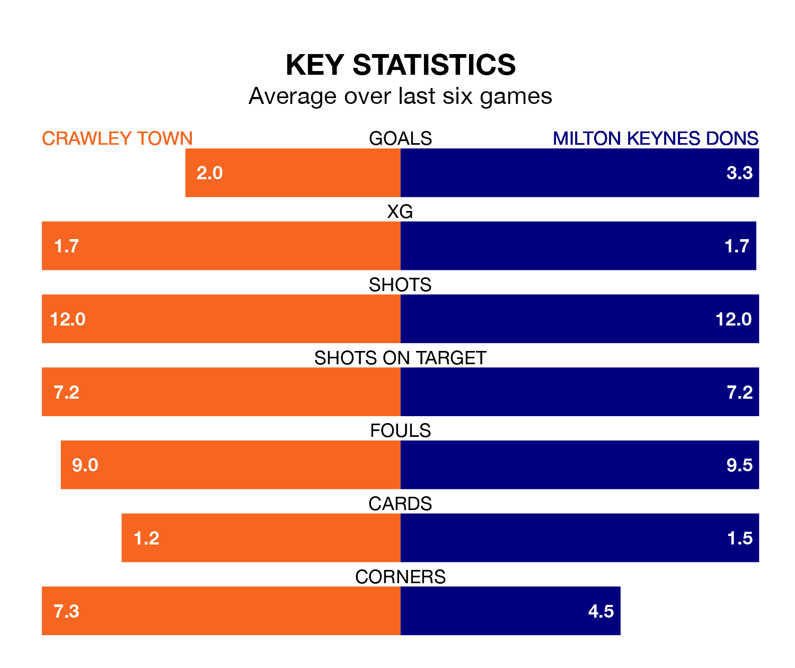

Crawley Town host Milton Keynes Dons on Monday at the Broadfield Stadium in EFL League Two.
In their last league match, on April 27, Crawley beat Grimsby Town 2-0 at home, with goals from Danilo Orsi-Dadamo and Klaidi Lolos.
Milton Keynes drew, 4-4 at home against Sutton United, with Alex Gilbey, Ellis Harrison, Emre Tezgel and Jack Payne on the scoresheet.
With 83 goals in 46 games so far this season, Milton Keynes are scoring more than average in the league with 1.8 goals per game. And they are conceding at an average rate, letting in 68 goals at a rate of 1.5 per game.
Crawley are also above average scorers, with 1.6 goals per game, compared to a league average of 1.5. They have conceded 1.5 goals per game.
In the last 10 years, Crawley and Milton Keynes have played each other on six occasions. Crawley won one of them, Milton Keynes four, and they drew once.
On average, the Red Devils scored 0.7 goals and the Dons 2.0 in those matches.
Their last meeting was on December 29, when Milton Keynes won 2-0 at home.
Dons are fourth in the table after 46 games, of which they have won 23 and drawn nine, earning 78 points.
Town are three places behind the Dons in seventh, with 21 wins and seven draws putting them on 70 points.
In Orsi-Dadamo, the Red Devils have one of the league's most on-form strikers so far this season. He has notched 19 goals in 45 appearances, to sit eighth in the scoring charts.
His goal rate of one every 206 minutes is slightly quicker than that of Max Dean, the away side's top scorer with a goal every 128 minutes, and a total of 15 goals in 29 games.
The hosts are in mixed form in EFL League Two, with two wins and two draws from their last six games.
With three wins and two draws over that period, Milton Keynes's form is better – they have taken 11 points from 18, compared to Crawley's eight.
Updated: 12:00 (UTC), 02/05/24